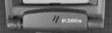
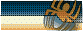

|
|
|  |

|
Aby przegl±danie naszej witryny WAP by³o jak najbardziej proste i intuicyjne, czy bêdzie siê ona sk³ada³a z jednej talii, czy kilku mniejszych, musimy z rozwag± rozplanowaæ po³±czenia poszczególnych kart. Pomimo i¿ na pierwszy rzut oka wydaje siê to byæ bardziej skomplikowane ni¿ w HTML`u, gdy¿ w jednym dokumencie mie¶ci³a siê tam tylko jedna strona, a w WML`u mo¿e byæ ich (kart) wiêcej, tworzenie odno¶ników w WML jest analogiczne do sposobu w jaki robili¶my to w przypadku HTML. Dla jasno¶ci wspomnê, ¿e aby wybraæ jaki¶ odno¶nik nale¿y;
<a> </a> jest znacznikiem umo¿liwiaj±cym przechodzenie do innych kart. Jego obligatoryjnym atrybutem jesthref="adres_url" który deklaruje po³o¿enie pliku do którego odwo³uje siê nasz link. Innym atrybutem, jest title="tytul" Jego u¿ycie nie jest konieczne, jednak je¿eli wpiszemy tytu³, niektóre przegl±darki w jaki¶ sposób go poka¿±; najczê¶ciej na dole wy¶wietlacza. Nie wszystkie jednak; przyk³adem mo¿e byæ emulator Nokii 6150, standartowo znajduj±cy siê w Nokia WAP Toolkit.Mo¿e teraz sprawdzimy jak to dzia³a w rzeczywisto¶ci. Proponujê stworzyæ nowy folder, a w nim dwa pliki; talia1.wml oraz talia2.wml Pierwszy z plików, niech zawiera taki kod;
a drugi taki;
W ten sposób stworzyli¶my dwie talie, w ka¿dej po jednej karcie, miêdzy którymi mo¿emy siê poruszaæ. Proponujê sprawdziæ jaki efekt w u¿ywanej przez nas przegl±darce bêdzie mia³o dodanie do znacznika <a href=""> atrybutu title="tytul"W Nokia WAP Toolkit mo¿emy wybieraæ emulatory Noki z po¶ród dwóch modeli; w standardowym menu wybieramy "Toolkit"- "Preferences..."- zak³adkê "General" i w menu WAP Device wybieramy interesuj±cy nas model. Standartowo mo¿emy wybraæ Nokiê 6150 lub 6110. Ta pierwsza nie interpretuje atrybutu "title", za¶ ta druga powinna pokazaæ tytu³ odno¶nika w lewym dolnym rogu ekranu. I oto przyk³ad i¿ podobnie jak w przypadku HTML`a nie ma porozumienia miêdzy przegl±darkami Microsoftu i Netszkapy, tak tutaj ró¿ne przegl±darki ró¿nie interpretuj± kod wml. Jest to wyzwanie dla wapmasterów, aby tworzyli karty, które bêd± poprawnie wy¶wietlane we WSZYSTKICH modelach telefonów :-) Teraz, kiedy ju¿ wiemy jak tworzyæ po³±czenia miêdzy dwoma taliami, proponujê utworzyæ jedn± taliê z kilkoma po³±czonymi odno¶nikami kartami. Plik bêdzie siê nazywa³ nawigacja.wml, i bêdzie zawiera³ trzy karty; z ka¿dej bêdzie mo¿na przej¶æ do innej. Widzimy tutaj, jak wa¿nym elementem ka¿dej karty jest jej "id". Oto przyk³adowy kod talii "nawigacja.wml"
Na koniec przedstawiê, jak wygl±da kod odno¶niku do danego numeru telefonicznego, tzn. po wybraniu tego linku telefon powinien automatycznie ³±czyæ siê z podanym numerem; <a href="wtai://wp/mc;+48501333222">501-333-222</a>
|
WSTÊP | WPROWADZENIE | NARZÊDZIA | STRUKTRA DOKUMENTU | FORMATOWANIE TEKSTU | TABELE I OBRAZY | NAWIGACJA | ZADANIA I ZDARZENIA | FORMULARZE | PHP | LINKI | AKTUALIZACJE |
|
Copyright (c) Tomasz Libera "Liberator" 2000- 2002 All Rights Reserved Zezwala siê na kopiowanie i rozpowszechnianie wiernych kopii niniejszego dokumentu, bez prawa wprowadzania zmian. |
| Kontakt: liberator@hot.pl, tel. 503-734-117, Gadu-Gadu: 868607 |